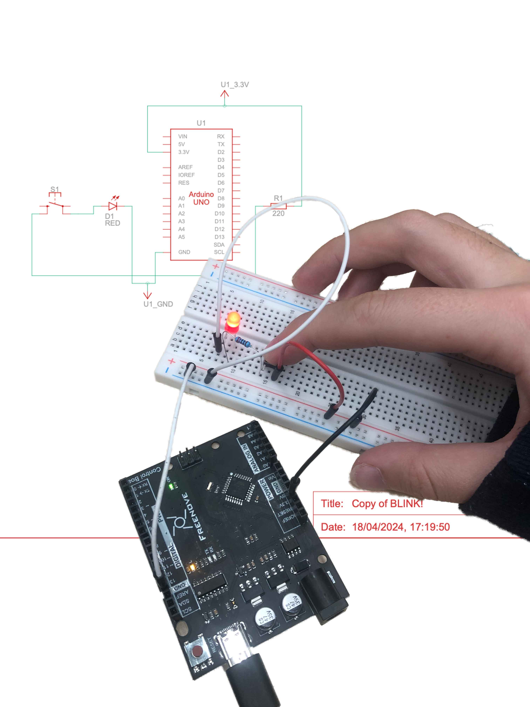
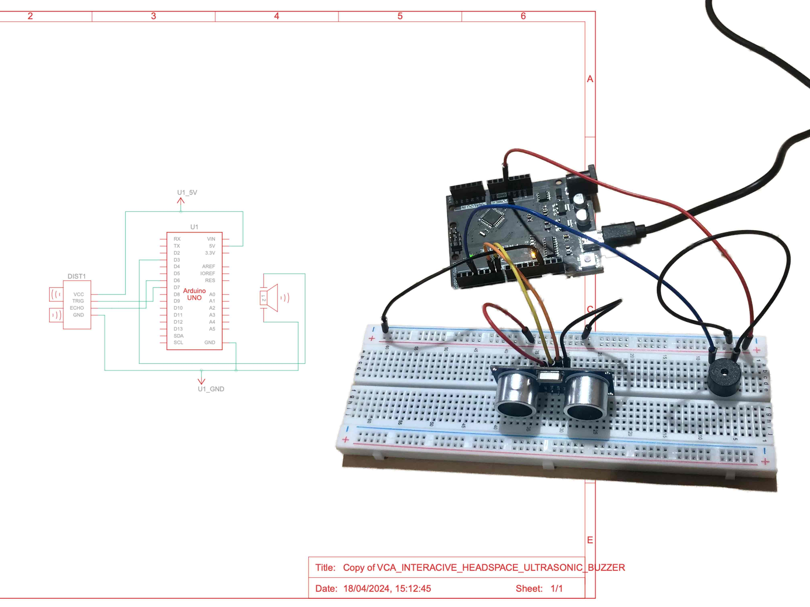
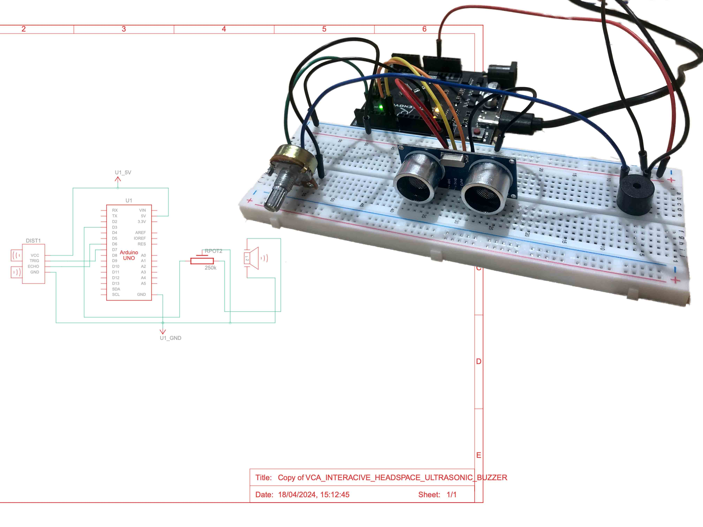

BLINK LED: This is the first interactivity for physical computing. The light lights up when the light sensor gets covered from light. You will need: a led light (red), push button, 220Ω resistor, 4x cords

This is an ultrasonix buzzer that will sound off an alarm when something gets too close to the distance sensor. To make this you will need: 1x ultrasonic distance sensor, 1x buzzer, 7x cords

This is just like the other Ultrasonic Buzzer we made, but here we added a Potentiometer to adjust the volume of the buzzer. To make this you will need: 1x ultrasonic distance sensor, 1x buzzer, 7x cords